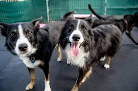

Una buena guardería para mascotas es fundamental por varias razones. Primero, proporciona un entorno
seguro y supervisado para su mascota cuando no puede estar con usted.
Esto es especialmente importante si tiene que trabajar largas horas o si tiene compromisos que lo
mantienen fuera de casa durante períodos prolongados.
Además, una guardería para mascotas brinda atención especializada, con personal capacitado y
experimentado en el cuidado animal.
Esto significa que su mascota recibirá la atención adecuada según sus necesidades individuales, ya
sea
alimentación específica,
medicación o ejercicios apropiados.
Otro aspecto crucial es la socialización. En una guardería, su mascota tendrá la oportunidad de
interactuar con otros animales y personas,
lo que es esencial para su bienestar emocional y para prevenir problemas de comportamiento como la
ansiedad por separación o la agresividad hacia otros animales.
Como empresa Caninos y Felinos, nos dedicamos a ofrecer una amplia gama de servicios diseñados para
atender las necesidades específicas de cada mascota y sus dueños.
Nuestra guardería diurna proporciona un entorno seguro y estimulante donde las mascotas pueden
socializar, jugar y recibir atención personalizada durante el día.
Esto es especialmente beneficioso para aquellos dueños que trabajan largas horas o tienen
compromisos
que les impiden estar con sus mascotas durante el día.

Para aquellos momentos en que los dueños necesitan viajar o están fuera de casa por períodos
prolongados,
ofrecemos servicios de pensión nocturna.
Aquí, las mascotas pueden quedarse con nosotros y recibir atención continua y amorosa, brindando
tranquilidad a sus dueños mientras están lejos.
Nuestro equipo está capacitado para proporcionar cuidados médicos básicos, administrar medicamentos
según
las necesidades individuales de cada mascota
y brindar atención médica en caso de emergencia. Esto asegura que cada mascota esté en buenas manos
y reciba la atención que necesita durante su estancia con nosotros.
Además del cuidado básico, organizamos actividades físicas y mentales para mantener a las mascotas
activas y estimuladas.
Esto incluye juegos supervisados, caminatas y tiempo de juego al aire libre,
asegurando que cada mascota tenga una experiencia enriquecedora y divertida con nosotros.
Ofrecemos servicios de aseo profesional, que incluyen baños, cepillado,
corte de uñas y limpieza de oídos, para mantener a las mascotas limpias y saludables durante su
estancia
con nosotros.
Dependiendo de las necesidades individuales de cada mascota y sus dueños, también ofrecemos servicios
adicionales como entrenamiento básico,
fotografía de mascotas y transporte, asegurando que cada necesidad sea atendida de manera completa y
satisfactoria.
En Caninos y Felinos, nos esforzamos por brindar un cuidado excepcional y amoroso a todas las
mascotas
que confían en nosotros.